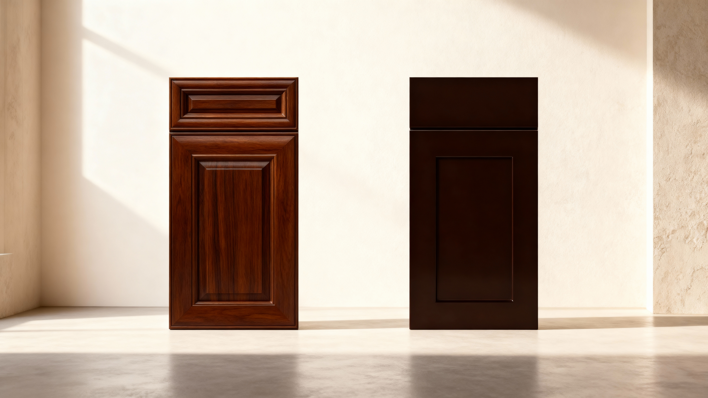

Three-layer lacquer stain that leaves more of the natural grain visible.
Back to Cabinet Catalog
Asina Global / Cabinets / Framed
Monterey
Stained cabinet warmth on the same premium traditional platform.
Monterey carries the richer wood-toned side of the framed cabinet catalog for projects that want the cabinet itself to bring more warmth and depth into the room.
Rubber strip design supports panel movement and keeps the center panel stable over time.
Constructed from full 5/8-inch premium plywood panels for superior strength, stability, and craftsmanship. (U-Box)
Full access frame, full plywood back panel, and full overlay fronts.
Colors
Collection colors.
See each color with its sample, full kitchen view, and the specs that matter for quoting.

Stained wood / 3-layer lacquer stain
American Walnut
Rich walnut cabinetry with the deepest natural wood presence in the framed lineup.
Finish tone
Deep walnut brown.
Face / material
Solid American Walnut faces with visible natural grain.
Box build
Premium plywood U-Box with full plywood back panel.
Panel / thickness
Full 5/8-inch premium plywood panels.
Frame / overlay
Flush face frame with full overlay fronts.
Hardware / use
Undermount soft-close tracks, soft-close hinges, and natural wood interior.
Collection features
What defines Monterey.
Key Monterey details, kept short for faster comparison.
3-Layer Lacquer Stain
The Monterey stain process keeps more of the natural wood character visible while adding a smooth protective finish.
Rubber Strip Design
Flexible rubber strips support natural panel movement and help maintain a more stable door face over time.
5/8-Inch Panels (U-Box)
Constructed from full 5/8-inch premium plywood panels for superior strength, stability, and craftsmanship. (U-Box)
Full Access Frame
The framed platform is built to maximize usable access while keeping the fuller, traditional cabinet look.
Best fit
Projects that need a warmer stained cabinet expression instead of a brighter painted look.
Use cases
Hospitality, residential, and richer commercial interiors where walnut or espresso direction supports the room palette.
What to send
Send the finish choice, room type, cabinet run, and whether the quote needs vanity or tall storage pieces.